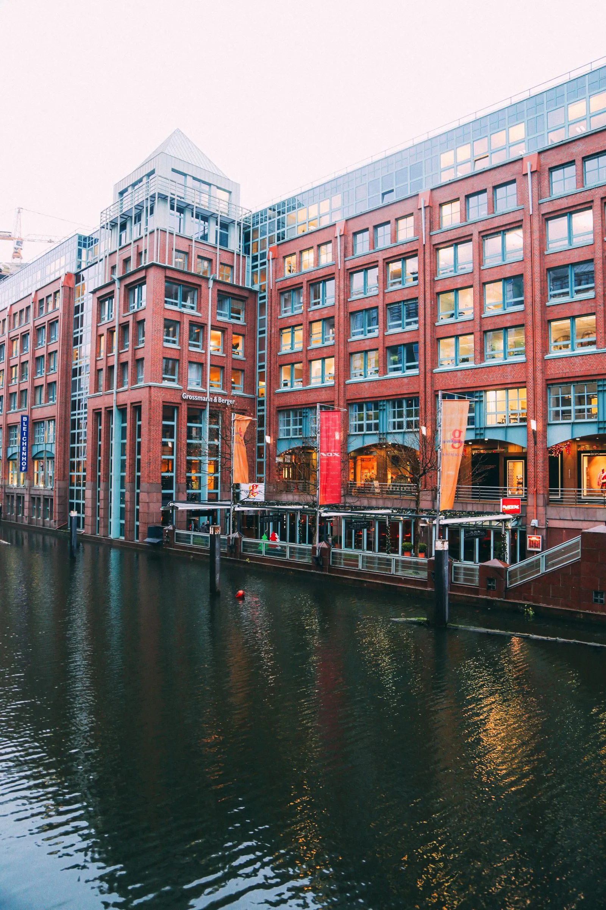

¿Listo para impulsar tu futuro en ingeniería?
Si te encuentras estudiando tus últimos semestres en Ingeniería Biomédica, Eléctrica o Electrónica en el Instituto Tecnológico de Mérida, te invitamos a realizar tus prácticas profesionales con nosotros en el SNNU (Systems Neuroscience & Neurotechnology Unit), ubicado en htw saar, universidad socia del ITM.
Nuestros laboratorios se encuentran en Saarbrücken
,
Alemania


 , y realizamos investigación multidisciplinaria en neurociencia
de sistemas
a múltiples escalas, neuromodelado cuantitativo y neuroimagen.
, y realizamos investigación multidisciplinaria en neurociencia
de sistemas
a múltiples escalas, neuromodelado cuantitativo y neuroimagen.
Durante tu estancia, podrás trabajar bajo la supervisión de alguno de nuestros colaboradores en una de nuestras líneas de investigación. Para más detalles, puedes visitar nuestra página web. Nuestros colaboradores hablan alemán, inglés y, en algunos casos, español.
Para más información, contáctanos en el correo exchange@snn-unit.de Si deseas conocer más sobre el proceso interno dentro del Tecnológico, puedes contactar a la Ing. Margarita Álvarezmaria.ac@merida.tecnm.mx.
Roger Vargas - Investigador Asociado SNN Unit
Egresado de Ingeniería Eléctrica del ITM. Inició como residente en la HTW Saar y continuó con la maestría en Neural Engineering. Actualmente trabaja como investigador asociado en la SNN-Unit, combinando técnicas de programación y medición de biopotenciales.
Gerardo Romero – Audio Inmersivo / Ambisonics
Egresado de Ingeniería Electrónica del Instituto Tecnológico de Mérida. Su tesis de maestría se enfoca en audio inmersivo con el formato Ambisonics, vinculado a entornos de realidad virtual.
Ximena Quijano – Potenciales Evocados Auditivos
Egresada de Ingeniería Biomédica del Instituto Tecnológico de Mérida. Su proyecto midió potenciales evocados mediante estimulaciones auditivas para realizar análisis objetivos y subjetivos de las respuestas de los sujetos, utilizando MATLAB y ARS Studio.
Juan Ek – Potenciales Evocados Olfativos
Egresado de Ingeniería Biomédica del Instituto Tecnológico de Mérida. Su proyecto implementó un dispositivo generador de esencias en un ambiente de inmersión para medir potenciales evocados olfativos.
Karla Medina – Implantes Cocleares
Egresada de Ingeniería Biomédica del Instituto Tecnológico de Mérida. Su project work en la maestría de Neural Engineering trabaja con simulaciones de audición con implantes cocleares, analizando configuraciones para mejorar la calidad de vida de los pacientes.
Fabián Hernández – Neural Engineering
Egresado de Ingeniería Biomédica del Tecnológico de Mérida. Su proyecto implementó inteligencias artificiales para mejorar la neuroergonomía en entornos de trabajo de alta demanda mental. Actualmente cursa la maestría en Neural Engineering en Alemania.
Fernanda Flota – Estimulación Auditiva en Simulador de Conducción
Egresada del Tecnológico de Mérida. Su proyecto de tesis consistió en desarrollar estímulos auditivos para experimentos realizados en un simulador de coche, utilizando herramientas de inteligencia artificial.
Gerardo Díaz Ramírez – Análisis de Señales EEG
Egresado de Ingeniería Biomédica del Tecnológico de Mérida. Realizó su residencia en 2025 analizando señales electroencefalográficas para evaluar niveles de atención mediante procesamiento digital. Su experiencia lo motivó a quedarse en Alemania, donde actualmente cursa el segundo semestre de la maestría en Neural Engineering.